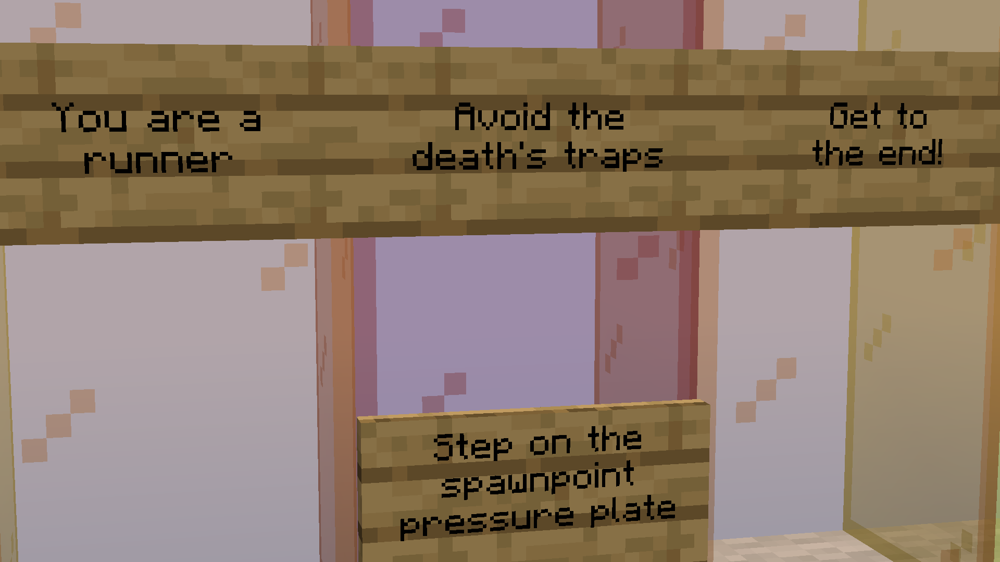
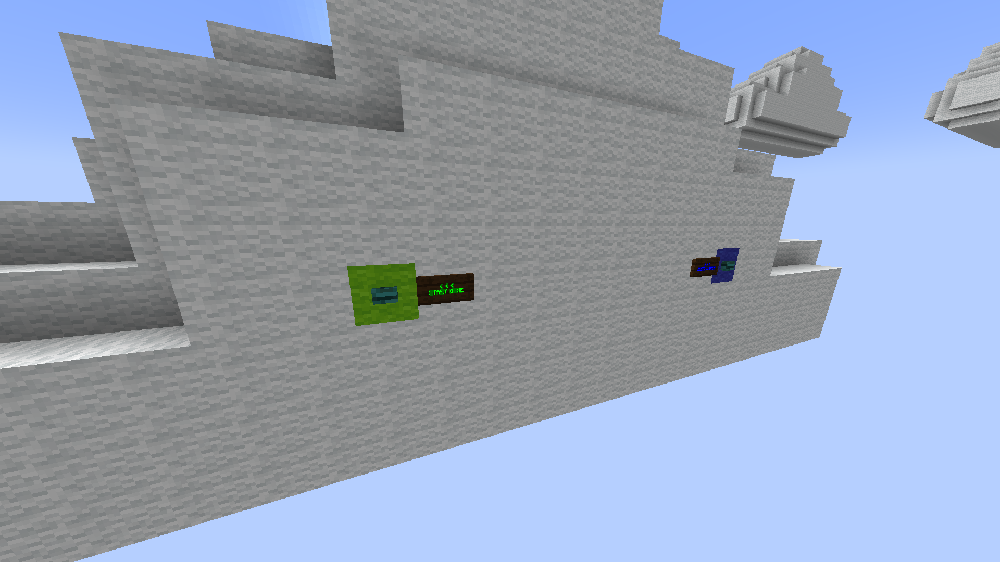
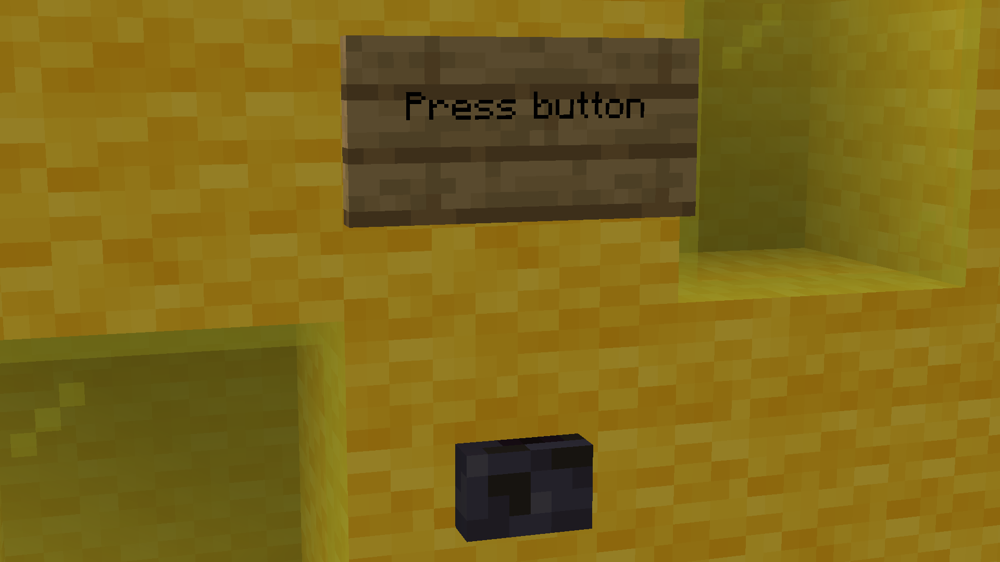
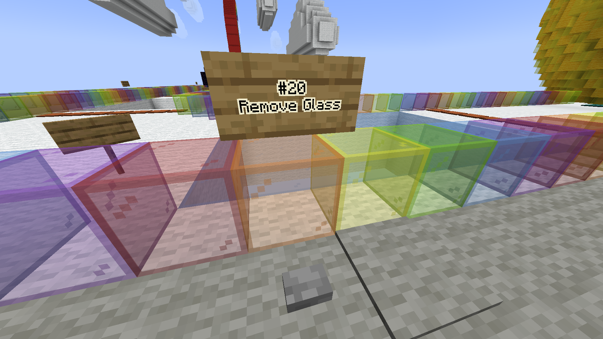
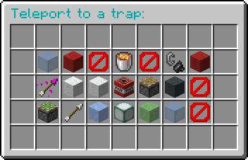

Deathrun+
GitHub repository (plugin code)

Background
Once upon a time, The Hive was on Java edition. My favourite game on the server was Deathrun, I liked it enough to want to build my own map. In 2018, I built the map and uploaded it to Planet Minecraft. But...I’m not entirely sure it worked (sorry if you played it and it didn’t). Now, four years later, I have updated it, made sure it works, added more, and made a plugin with additional features.

How to Play
It’s imporant to read all the signs for things I might’ve missed here.
Once everyone is ready, someone can press the ‘Start Game’ button at the cloud lobby. This teleports everyone to the starting area, and randomly picks a player to be death.
RUNNERS: the people trying to get to the end of the map first by safely traversing the 21 traps.
- Crimson pressure plates set the initial spawnpoint
- Acacia pressure plates increase score (to see who is where)
- Polished blackstone pressure plates are checkpoints (spawnpoints)
- Pressure plates above emerald blocks give jump boost
- Pressure plates above red wool give speed boost
- The warped pressure plates at the end give jump and speed boost
The first runner to jump into the sun and press the button is the winner!
DEATH: the person trying to stop the players from reaching the end by activating traps
- Start pressure plate #1: spawnpoint
- Start pressure plate #2: join team “Death” (grants invisibility)
- Start pressure plate #3: speed
- Start pressure plate #4: message
Each of the 21 traps (except the natural ones) has a button to activate it.
Deathrun+ Plugin
The plugin is NOT required to play the game.
Deathrun+ is a spigot plugin that adds a few additional features to Deathrun. I don’t feel like putting it on the Spigot website, so you’ll need to know how to put in on your server a different way.
COMMANDS:
/traps
(Only death can use this command.) Opens a menu that lets Death teleport to any trap.
/lobby
Teleports the player to the lobby
OTHER:
- Void deaths are instant.
Problems
- Traps have no cooldowns. (I tried my best to come up with a way to make them in Vanilla Minecraft, but I couldn’t. With Spigot I managed to get the buttons to dissapear for a few seconds after being pressed, but I couldn’t get them to reappear in the right orientation.) I usually tell Death to give 5 seconds between activations.
- The TNT trap (#11) will eject the closest player, no matter where they are. I usually tell Death to only activiate the trap once per person
Downloads
deathrun.zip — the map, 1.19.2
Deathrunplus-1.2.4-1.18.1.jar — the plugin, 1.19.2
LAST UPDATED: March 18th, 2022